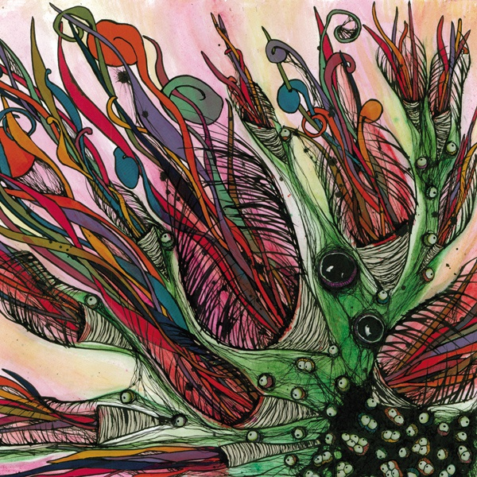

Ken Topham and Joe Andreoli grew up in Massachusetts. Even though they had never met, they both enjoyed the same amusement park. They both liked a ride called the Rotor. You would stand inside the Rotor and it would spin and you would stick to the wall and the floor would drop. Joe once saw someone puke on the Rotor and it stuck to their face until the ride slowed down. Other names for the Rotor are the Gravitron, the Twister, the Vortex, the Turkish Twist and the Starship 2000. Have you ever seen The 400 Blows (Les Quatre Cents Coups)? Ken has never seen anyone puke on the Rotor.Joe and Ken first met while going to college in New Hampshire. Ken studied music, while Joe studied literature. They drank coffee and talked about the theory that whales were once sea creatures and they evolved into wolf-like creatures that ran on land, but they didn’t like it so they evolved back into sea creatures and eventually became huge fucking whales. They formed a band. They can both play guitar and drums, but in GIRAFFES? GIRAFFES! Joe taps and plucks while Ken taps and hits. In 2004, Ken and Joe and their very nice and very attractive girlfriends moved to Santa Cruz, California. They liked it there. It was nice outside. While living in California, GIRAFFES? GIRAFFES! released their debut album SUPERBASS!!!! (Black Death Greatest Hits Vol. 1) in December 2005 and their second album More Skin With Milk-Mouth in December 2007. They also put out two live releases, Live In Toronto and Live On KZSC. They toured around America and Canada and played fun shows with billions of really great bands. In 2009, Ken and Joe and their very nice and very attractive girlfriends moved to New England. They like it there. It’s nice outside. Currently, the band is living in Western Massachusetts and they released their new album PINK MAGICK in September 2011.General questions, press/media, and booking in New England: info(at)giraffesgiraffes(dot)com International booking and tour management: david(at)bfosbooking(dot)com
